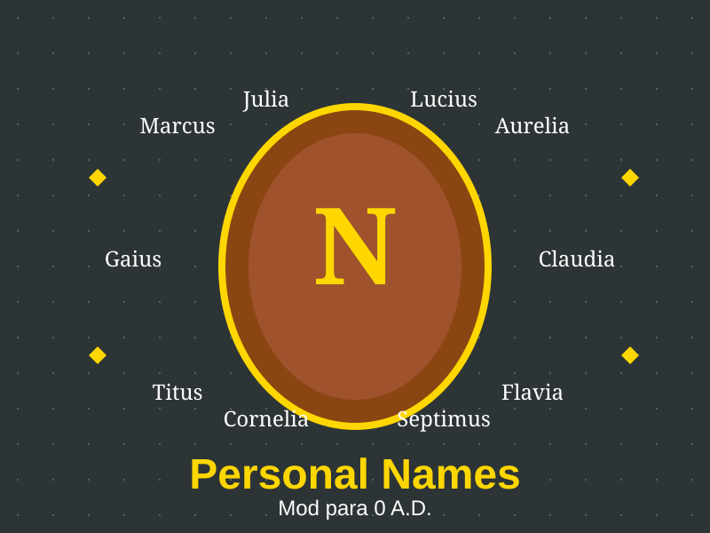

Personal Names
"Cada soldado tiene una historia, cada nombre cuenta"
Asigna 420 nombres históricos reales a las unidades según civilización y género. Los nombres aparecen en el panel de selección como "Marco (Soldado Romano)". No asigna nombres a los héroes — solo a unidades regulares.
⬇️ Descargar Mod📝 Descripción Detallada
Personal Names es un mod de simulación que humaniza las unidades al asignarles nombres únicos basados en su civilización. Cuando una unidad es entrenada, se le asigna un nombre de una base de datos de 450 nombres históricos (30 nombres × 15 civilizaciones).
Cómo funciona: El mod intercepta la creación de unidades infantry y asigna un nombre usando un hash determinista basado en el Engine.GetID() de la unidad. Esto garantiza que cada unidad siempre tenga el mismo nombre, pero no se repite en la misma partida.
Civilizaciones soportadas: Atenas, Britanos, Cartago, Esparta, Galos, Germanos, Han (China), Iberos, Kush, Macedonios, Mauryas, Persas, Ptolemaicos, Romanos y Seléucidas.
✨ Características Principales
- 450 nombres históricos: 30 nombres × 15 civilizaciones, basados en datos reales
- 15 nombres por género: 15 masculinos y 15 femeninos por civilización
- Solo unidades regulares: No asigna nombres a héroes (ya tienen nombre propio)
- Asignación determinista: Usa el hash del ID de la unidad — siempre el mismo nombre para la misma unidad
- Idiomas: Español (por defecto) e Inglés — cambia según la localización de 0 A.D.
- Se muestra en el panel: Aparece como "Nombre (Tipo de Unidad)" al seleccionar
- Sin conflictos: Verifica que no haya duplicados antes de asignar
🎯 ¿Qué Esperar de Este Mod?
Con este mod podrás:
- Ver el nombre de cada unidad en el panel de selección (ej: "Marco (Soldado Romano)")
- Distinguir mejor entre tus unidades en batallas intensas
- Crear historias y roles para tus soldados favoritos
- Disfrutar de una experiencia más personal e inmersiva
- Ver nombres culturalmente apropiados para cada civilización
- Cambiar entre español e inglés desde las opciones de 0 A.D.
🔍 ¿Dónde Encontrarlo en el Juego?
Los nombres aparecen automáticamente en el panel de información de cada unidad.
- Haz clic en una unidad para seleccionarla
- En el panel de selección verás el nombre asignado junto al tipo de unidad
- Ejemplo: "Marco (Soldado Romano)" en lugar de solo "Soldado Romano"
Los nombres también aparecen en las listas de unidades y en los menús de asignación.
⚙️ Información de Compatibilidad
Nota: Los textos mostrados ("Soldado Romano", etc.) usan el sistema de localización de 0 A.D. El idioma se cambia desde las opciones del juego.
📋 Instrucciones de Instalación
- Descarga el mod: Haz clic en el botón de descarga de arriba.
- Busca la carpeta de 0 A.D.: Generalmente está en:
- Windows:
C:\Users\[TuUsuario]\Documents\My Games\0ad\mods - Linux:
~/.local/share/0ad/mods - Mac:
~/Library/Application Support/0ad/mods
- Windows:
- Crea una carpeta para el mod: Si no existe, crea una carpeta llamada
personal_namesdentro de la carpeta "mods". - Copia los archivos: Extrae el archivo descargado y copia su contenido dentro de la carpeta
personal_names. - Abre 0 A.D.: Inicia el juego.
- Activa el mod: Ve a Opciones → Mods, busca "Personal Names" y actívalo.
- ¡Listo! Tus unidades ahora tendrán nombres únicos.
👥 Créditos
Autor: freddyeleazar
Versión: 0.1.0
Licencia: GPL v2 (como 0 A.D.)